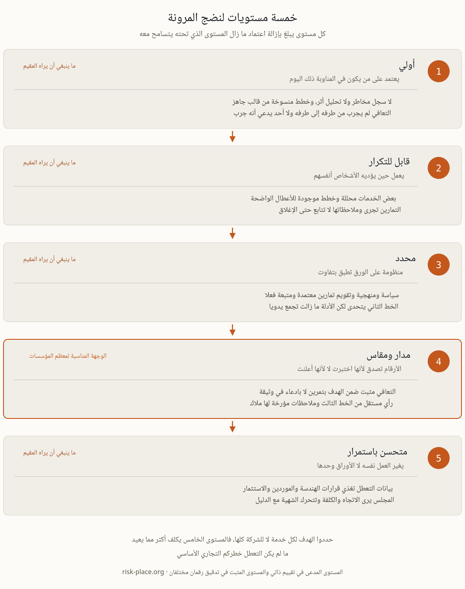

تكاد كل نماذج نضج المرونة المتداولة تسير على الدرجات الخمس نفسها، أولي ثم قابل للتكرار ثم محدد ثم مدار ومقاس ثم متحسن باستمرار، والتسميات هي أقل ما يهم فيها. فالذي يفصل مستوى عن الذي يليه هو دائما اعتماد يزال. الانتقال من الأولي إلى القابل للتكرار يزيل الاعتماد على بطل فرد، لأن القدرة تبدأ بالوجود في منهجية بدل رأس شخص. والانتقال إلى المحدد يزيل الاعتماد على من يصادف أنه يؤدي العمل، فالسياسة والمنهجية والتقويم تعتمد وتتبع في كل مكان لا في الإدارتين اللتين تهتمان بالأمر. والانتقال إلى المدار والمقاس يزيل الاعتماد على مجرد الادعاء، فأزمنة التعافي تثبت بالاختبار بدل أن تعلن في وثيقة، ويشهد بذلك طرف مستقل. والانتقال إلى المتحسن باستمرار يزيل الاعتماد على وظيفة الاستمرارية ذاتها، لأن بيانات التعطل تبدأ بتغذية قرارات عادية في الهندسة والموردين والاستثمار. واقرأوا السلم بهذه الطريقة فيتوقف التقييم عن كونه تمرينا في المصطلحات. والسؤال عند كل درجة بسيط، ما الذي يجب أن ينكسر ليتوقف هذا عن العمل، وهل ما زالت الإجابة اسم شخص.

درجات النضج المقيمة ذاتيا تقع باستمرار فوق الدرجات التي يتحقق منها طرف مستقل، والفجوة لها ثلاثة أسباب بنيوية لا أخلاقية. فمن يضع الدرجة هو غالبا من صمم ما يقيمه، ولا أحد يقسو على بنيانه. والاستبيان يسأل هل توجد الوثيقة بدل أن يسأل متى عملت آخر مرة، فخطة كتبت قبل ثلاث سنوات ولم تفتح تنال الدرجة نفسها التي تنالها خطة قادت تعافيا حقيقيا في مارس الماضي. والدرجة المنخفضة تحمل كلفة بلا عائد، لأنها تستدعي التدقيق ونادرا ما تستدعي الموازنة. وإصلاح الثلاثة زهيد. اعلنوا قاعدة الدليل قبل بدء التقييم، بحيث يرتبط كل مستوى بوثيقة مسماة وتاريخ محدد. واجعلوا التدقيق الداخلي يعاين عينة من الادعاءات بدل أن يكرر التمرين كله. ثم شغلوا اختبار المعايرة الذي يحسم الجدل في يوم واحد، خذوا ثلاثة ادعاءات عشوائية من تقييم ذاتي يزعم المستوى الرابع واطلبوا دليلها خلال أربع وعشرين ساعة. والنسبة التي تعود إليكم في صورة صالحة للاستعمال أقرب إلى مستواكم الحقيقي من الرقم المعروض على الشريحة.
مجموعة القياس العملية تتكون من خمس عائلات، ولكل مقياس هدف ومالك واتجاه حركة. التغطية، أي نسبة الخدمات المهمة التي لها تحليل أثر ساري ومالك مسمى، ونسبة الموردين الحيويين الذين تحققتم هذا العام من شروط تعافيهم وأرقام اتصالهم خارج ساعات العمل. الإثبات، أي نسبة تلك الخدمات التي أثبت تعافيها ضمن الهدف خلال الاثني عشر شهرا الماضية، والفارق بالدقائق بين هدف زمن التعافي المعلن والزمن المتحقق فعلا في آخر اختبار. السرعة، أي المدة من الاكتشاف إلى أول قرار في آخر ثلاثة أحداث حقيقية أو تمارين، والمدة حتى أول اتصال خارجي. التعلم، أي نسبة ملاحظات التمارين والحوادث المغلقة في موعدها، ووسيط عمر ما بقي مفتوحا، وعدد الملاحظات التي تكررت. الاعتماد، أي عدد العمليات الحيوية القائمة على شخص مدرب واحد، ونسبة الحجم المار عبر موقع أو مسار أو مورد واحد. ولاحظوا ما هو غائب عن القائمة. فنسب إنجاز التدريب وعدد الخطط المحدثة هذا الربع تقيس الجهد لا القدرة، ونظام إدارة الاستمرارية الذي يعرض بهذه الأرقام وحدها يبدو سليما حتى أول تعطل حقيقي.
أعضاء المجلس لا يحتاجون الرسم الشعاعي ولن يتذكروه. يحتاجون أربعة أشياء في صفحة واحدة. اتجاه ثلاثة أو أربعة مقاييس عبر أربعة إلى ستة أرباع، مع الفارق وسببه في جملة واحدة. وكم كلفت الحركة وماذا اشترت، فالنضج الذي استهلك وظيفتين وأنتج تعافيا أسرع بساعة قرار يحق للمجلس أن يزنه. والاستثناءات، أي الخدمات التي هبط مستواها ولماذا. والمستوى المستهدف بتاريخ مقابله، حتى يكون للرقم وجهة. ويجعل انضباطان هذه الصفحة جديرة بالثقة. لا تغيروا المقياس ولا مجموعة الأسئلة بين فترتين دون إعادة عرض التاريخ على الأساس نفسه، فإعادة التعريف التي ترفع الدرجة أشيع صور التضخيم الصامت. واعرضوا أضعف خدمة مهمة بدل متوسط المحفظة، لأن المتوسط عبر ثلاثين خدمة يخفي الخدمة التي ستفشل فعلا، وهي دائما الخدمة التي لم يسأل عنها أحد. وما ينبغي أن يملكه المجلس مباشرة من هذا كله مشروح في صفحة دور مجلس الإدارة في المرونة، وموقع القياس داخل منظومة المرونة التشغيلية مشروح في صفحتها.
المستوى الرابع وجهة صحيحة لمعظم المؤسسات، والمستوى الخامس يكلف أكثر مما يعيد ما لم يكن التعطل خطركم التجاري الأساسي. وحددوا الهدف لكل خدمة لا للشركة كلها، فمنصة مدفوعات أو نظام قبول في مستشفى قد يبرر المستوى الرابع، ونظام تقارير داخلي نادرا ما يبرر أكثر من الثاني، ودفع ثمن نضج موحد عبر كل شيء أضمن طريق للإنفاق الزائد على المرونة. واضبطوا الوتيرة على المقاس نفسه، المقاييس ذاتها كل ربع، وتقييم ذاتي منظم مرة كل عام، وتحقق مستقل كل عامين أو بعد أي تغيير جوهري، مع رفع النتائج إلى لجنة التدقيق لا إلى الإدارة التنفيذية موضع التقييم وحدها. وقاعدة حوكمة واحدة تساوي ما سواها مجتمعا، لا تجعلوا درجة النضج هدفا شخصيا لمن ينتجها، فهذا الترتيب يضمن تحسن الرقم سواء تحسنت القدرة أم لا، وهو الوجه الآخر لاستقلال الخط الثالث المشروح في صفحة نموذج الخطوط الثلاثة. وابدأوا من أضعف خدمة لا من أبرزها، ودعوا أول درجة صادقة تأتي منخفضة، فتقييم أول يقف عند المستوى الثاني ويصدقه الجميع أثمن من مستوى رابع لا يستطيع أحد إثباته. وتصميم بنية القياس هذه، والتأكيد الذي يجعل الرقم موثوقا خارج الوظيفة التي ترفعه، موضوع الوحدة M6 من برنامج ERGP.
قياس النضج وتصميم التأكيد والتقارير التي تجعل رقم المرونة موثوقا أمام مجلس الإدارة موضوع الوحدة M6 من برنامج ERGP، أول شهادة في حوكمة المرونة متاحة بالكامل باللغة العربية وبالإنجليزية أيضا. ست وحدات وستة مخرجات عملية وشهادة قابلة للتحقق.
تعرفوا على برنامج ERGP